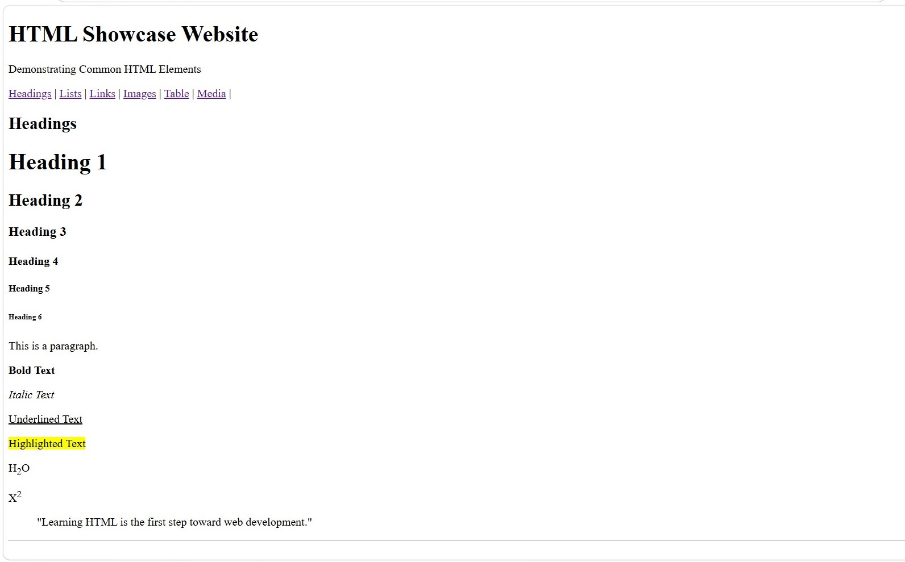
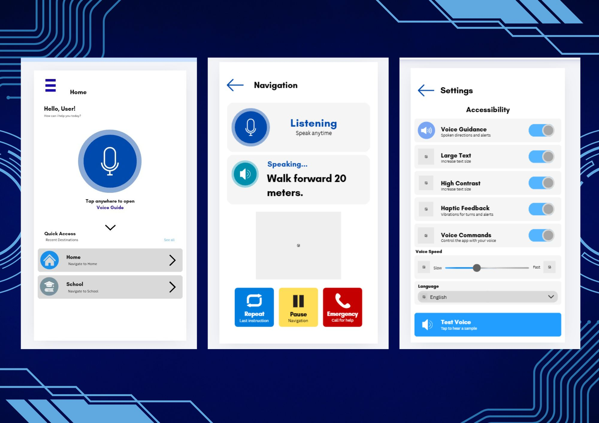
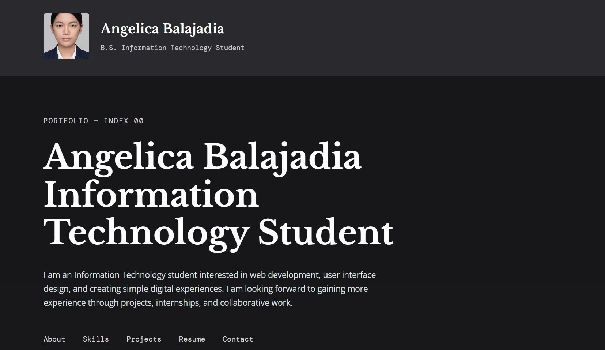

PORTFOLIO — INDEX 00
Angelica Balajadia
Information Technology Student
I am an Information Technology student interested in web development,
user interface design, and creating simple digital experiences.
I am looking forward to gaining more experience through projects,
internships, and collaborative work.
INDEX 01
About
I am currently studying Information Technology and developing my
knowledge in programming, web development, human-computer interaction,
and interface design. I enjoy learning how technology can be used to
solve problems and create useful experiences for people.
My current focus is building websites and user interfaces while
improving my skills in HTML, CSS, JavaScript, and other technologies.
I am continuously working on academic projects that help me become
a better developer and designer.
INDEX 02
Skills
LANGUAGES
HTML
continuously learning HTML to improve my web development skills
and adapt to new technologies in the present and future.
CSS
continuously improving my CSS skills
to create better designs and
adapt to modern web development trends.
C++
still learning C++ to strengthen my programming
and problem-solving skills while
adapting to new concepts and technologies.
UI/UX Design
continuously developing my UI/UX design skills
while staying open to new ideas,
design trends, and future user needs.
TOOLS
VS Code
Still learning and improving coding skills.
Figma
Sarting to lean UI/UX design
Canva
Still learning and improving design skills.
INDEX 03
Projects

HTML Showcase Website
A demonstration of different HTML topics and elements,
including headings, paragraphs, links, images, lists,and other basic HTML features.
It serves as a simple interactive reference for learning
and showcasing how HTML is used to create web pages.

VoiceGuide
An accessibility-focused concept designed to provide visual
support through clear interface elements, high contrast,
readable text, and voice-based guidance.

Personal Portfolio Website
A simple personal portfolio website created using HTML
and CSS to showcase my skills, projects, education, and
experience.
INDEX 04
Experience & Education
EXPERIENCE
2026 — Present
Student Developer
Academic Projects
Learning and coping on how to create websites, user interfaces, and programming projects
as part of my Information Technology studies.
2026 — Present
UI/UX Student Designer
Human-Computer Interaction Projects
Designed user interfaces while applying usability,
accessibility, consistency, and human-computer interaction
principles.
EDUCATION
2025 — Present
Bachelor of Science in Information Technology
Eastern Samar State University
Focus areas include programming, web development,
human-computer interaction, database systems, and
software development.
2018-2023
Secondary Education
High School Education
Completed secondary education and developed an interest
in technology and digital creativity.
2011-2017
Elementary Education
Elementary School Education
Studied and Gaudated at Bagacay Elementary School
on the year 2017 in Brgy. Bagacay
where I began developing my interest in technology.